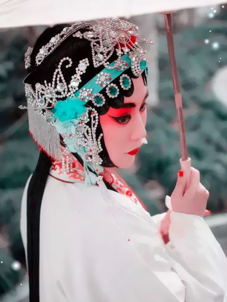

场景
昆曲舞台所表示的地点环境也总是随着脚色的行动而“移步换景”，并不受寻常空间概念的约束限制。用不同道具布景出不同场景和人物身份特征。昆曲舞台所表示的地点环境也总是随着脚色的行动而“移步换景”，并不受寻常空间概念的约束限制。用不同道具布景出不同场景和人物身份特征。

昆曲，原名“昆山腔”、“昆腔”，是中国古老的戏曲声腔、剧种，清代以来被称为“昆曲”，现又被称为“昆剧”。昆曲是中国传统戏曲中最古老的剧种之一，也是中国传统文化艺术，特别是戏曲艺术中的珍品，被称为百花园中的一朵“兰花”。
昆曲早在元朝末期（14世纪中叶）即产生于苏州昆山一带，它与起源于浙江的海盐腔、余姚腔和起源于江西的弋阳腔，被称为明代四大声腔，同属南戏系统。
拼音：Kun Opera
民族：汉族
别称：昆剧、昆腔、昆山腔
《班昭》
《南唐遗事》剧照
《锦绣河山图》
《琵笆行》
姚惠芬出生于苏州刺绣世家，从艺三十多年，精通各种刺绣技法，擅长人物肖像及中国写意水墨画的绣制。
昆曲舞台所表示的地点环境也总是随着脚色的行动而“移步换景”，并不受寻常空间概念的约束限制。用不同道具布景出不同场景和人物身份特征。昆曲舞台所表示的地点环境也总是随着脚色的行动而“移步换景”，并不受寻常空间概念的约束限制。用不同道具布景出不同场景和人物身份特征。
昆剧行腔优美，以缠绵婉转、柔漫悠远见长
昆曲唱腔属于联曲体。根据传统制谱法原则，选取曲牌，必须是相同宫调的曲牌，再按一定的规则联组成套。
制谱顺序是先根据戏剧内容选定宫调和相应曲牌，然后依照曲牌格律添写唱词，再根据人物形象塑造、戏剧情节的要求和发展等方面，结合唱字声韵在唱腔上做调整和编辑，由此逐步定谱成腔。昆曲唱腔属于联曲体。根据传统制谱法原则，选取曲牌，必须是相同宫调的曲牌，再按一定的规则联组成套。
制谱顺序是先根据戏剧内容选定宫调和相应曲牌，然后依照曲牌格律添写唱词，再根据人物形象塑造、戏剧情节的要求和发展等方面，结合唱字声韵在唱腔上做调整和编辑，由此逐步定谱成腔。